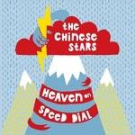
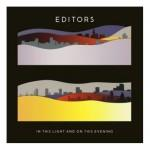
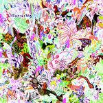

Music Reviews
-

The Chinese Stars Heaven on Speed Dial
Sometimes, music about blowing a line and fucking a stranger in the bathroom of a disco can be well done. Other times, it's just music about blowing a line and fucking a stranger in the bathroom of a disco.
Nate Adams does coke with Mickey Rourke, a clown and invents Fuck-Core -

Editors In This Light And On This Evening
Editors dramatically change their sound for their third effort, opting for 80's inspired wall of synths whilst ditching their anthemic guitar streak.
Juan Edgardo Rodríguez listens beneath the glitter and the gloom... -
Nirvana Bleach: Deluxe Edition
A little reminder from Sub Pop: We had ‘em first!
Sean Caldwell is in high school, again... -
Weezer Raditude
Weezer has given us an album full of head-scratching what the fuckery.
Andrew Baer is entertained for a few minutes... -
R.E.M. Live At The Olympia In Dublin: 39 Songs
R.E.M. release a mammoth record to results that are largely more a joy than a chore.
Daniel Dylan Wray reviews... -
Memory Tapes Seek Magic
If you're heading out in the car and looking for something to accompany those autumnal landscapes then you could do a hell of a lot worse than Memory Tapes. It also works pretty well sat in front of your computer.
Nick Fenn reviews... -
Radian Chimeric
Radian return from a five-year hiatus with an album tirelessly stitched of broken ideas and angry menacing. Rarely has hard work been less fun to listen to.
Ryan Pratt plays Chimeric during Halloween, plans to keep all his candy... -

Lightning Bolt Earthly Delights
Lightning Bolt's new album sees the band incorporating elements of sludge-metal and Indian ragas into their spazzy sound. They make the new elements work, but has their music lost its appeal in the process?
Preston Bernstein reviews... -
Florence and the Machine Lungs
There are great songs on Florence and the Machine's debut album, Lungs. You just have to sift through all the excess fat to find them.
Andy Pareti holds his breath for... -
The Jesus Lizard Pure / Head / Goat / Liar / Down
Music for mouth breathers, rabid pigs, waxeaters, gladiators and dancing naked ladies: You fail, millennium!
Sean Caldwell reviews...